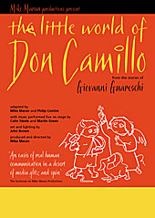

|
|
Past shows:The Little World of Don CamilloReviewsGiovanni Guareschi’s stories of a village priest in post-war Italy lend themselves ideally to the low-key storytelling styles of Mike Maran and Philip Contini. Sitting in an authentic looking grotto in the rear of an Italian delicatessen, the two take turns standing to narrate a tale, using minimal props and the natural gestures of a storyteller. The running theme of Guareschi’s books is the amicable conflict between the modest priest and the village’s communist mayor. Sometimes one wins, as when Don Camillo quietly blackmails the Communists into diverting some of their funds into his charitable projects, and sometimes the other, as when his attempt to keep a red-sponsored band out of a religious procession is foiled. More often though – and this is the essence of Guareschi’s vision – the two old friends find themselves on the same side, whether it is sharing a hunting dog or restoring an angel to the church tower. It is the quality of warmth and the conviction that good spirits matter more than politics which the gently ironic style of Maran and Contini capture most effectively. They are supported by a pair of musicians who provide, among other interludes, the unique sound of Verdi scored for accordion and jazz trumpet. Gerald Berkowwitz, The Stage
Mike Maran and Philip Contini’s enchanting partnership has spawned such successful productions as Private Angelo and Captain Corelli’s Mandolin, and The Little World of Don Camillo is no exception. Their blend of storytelling and acting is strikingly picturesque and, helped by fantastic performances by Colin Steele on trumpet and Martin Green on accordion, the result is a rare find. The performers retain the charisma of Guareschi’s novels, while injecting into his tales their own blend of inviting enthusiasm and quick-witted humour. They seem able to communicate and connect with their audience on a very personal level like your oldest friends recounting their fondest memories. The Little World of Don Camillo is both amusing and touching without being sentimental. It is a veritable showcase of the kindness of humanity and its more wanton sides, and an uncommon theatrical treasure. Yasmin Sulaiman, Theatre Fest
Some of the tales are a bit too whimsical and cosy for today’s harsher world. They feel as if they have come from another era, which indeed they have. With the decline in the power of institutional religion and Marxist politics the dialogues don’t have their former cutting edge. Nevertheless there is much amusement in the manoeuvres of the mayor and the priest as they seek to outwit one another – and the music is a delight. The Herald, Ron Ferguson |
|  |
| More about this show: |
| Reviews |
| Photos |
| Mike in Italy |